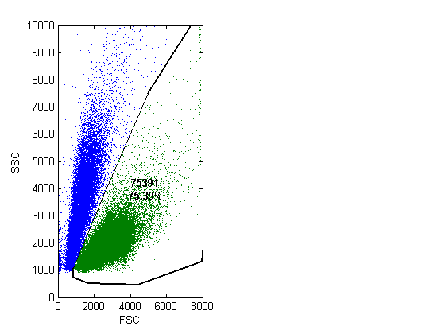
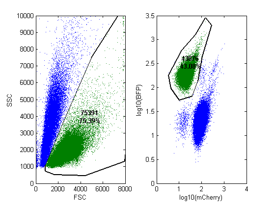

Flow Cytometry Gating Demo
This file shows how to filter flow cytometry data by defining gates in 2 dimensions. It uses functions UIGETGATE and APPLYGATE, which are part of the Springer Lab Flow Cytometry Toolbox.
Created 20120703 JW
Contents
Load and prepare the data
load('data/data_onetube.mat'); % originally FCS 3.0 from Stratedigm size(data) % Thin the data for display thindata = datasample(data,100000,1); size(thindata)
ans =
760992 32
ans =
100000 32
Define first gate
% Prepare figure figure subplot(1,2,1) % Prompt user to draw vertices of a polygon on a scatterplot of FSC versus % SSC gate1 = uigetgate(thindata,[2 4]); xlabel('FSC') ylabel('SSC')
Select gate.
UIGETGATE returns a struct
gate1
gate1 =
coords: [11x2 double]
chanidx: [2 4]
scalex: @(x)x
scaley: @(x)x
The returned gate object can be applied on the unthinned data
newdata = applygate(data, gate1); size(newdata)
ans =
572978 32
Define another gate, this time on mCherry versus BFP
subplot(1,2,2) % Use log-log axes gate2 = uigetgate(datasample(newdata,100000,1),[29 15],'log'); xlabel('log10(mCherry)') ylabel('log10(BFP)')
Select gate.
Filtered data
newdata = applygate(newdata, gate2); size(newdata)
ans =
246860 32